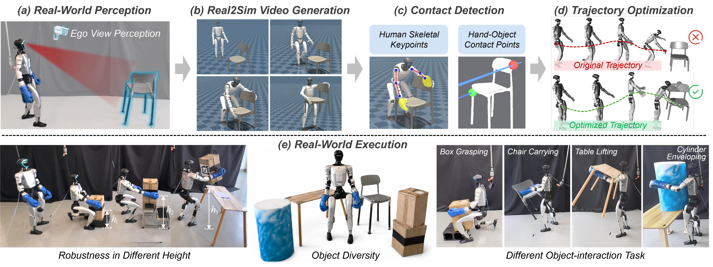
GenHOI: Contact-Aware Humanoid-Object Interaction by Imitating Generated Videos without Task-Specific Training
Preprint, 2026
Humanoid-Object Interaction by Imitating Generated Videos.
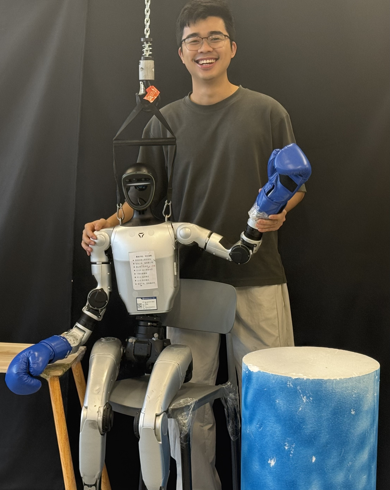
I am a PhD student at the Hong Kong University of Science and Technology (Guangzhou), supervised by Jun Ma and Michael Yu Wang. Previously, I received my master's degree from the Institute of AI and Robotics at Fudan University in 2024, supervised by Hongbin Fang, and my bachelor's degree in Robot Engineering from Southeast University in 2021. My research focuses on loco-manipulation, especially long-horizon mobile interaction with a variety of objects beyond simple tabletop pick-and-place tasks, with the goal of alleviating human workload. If you are interested in working together, feel free to contact me at zbi217@connect.hkust-gz.edu.cn!

Preprint, 2026
Humanoid-Object Interaction by Imitating Generated Videos.
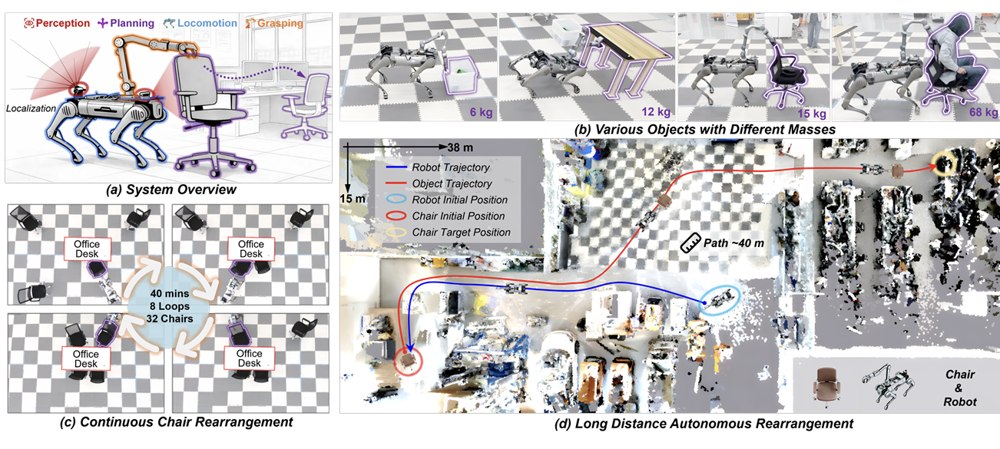
IEEE Transactions on Robotics (T-RO), 2026 (Accepted)
Autonomous Large-Object Rearrangement with a Legged Manipulator.
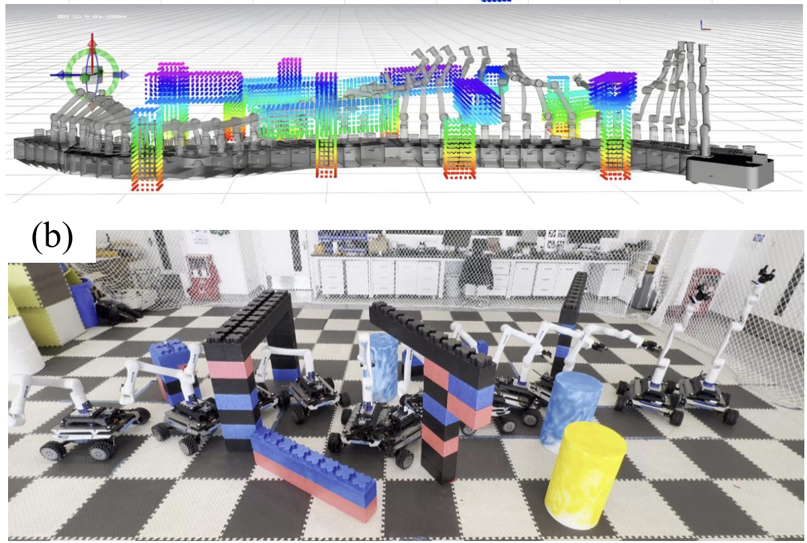
Submitted to TRO
Fast and safe trajectory optimization for mobile manipulators with neural configuration space distance field.
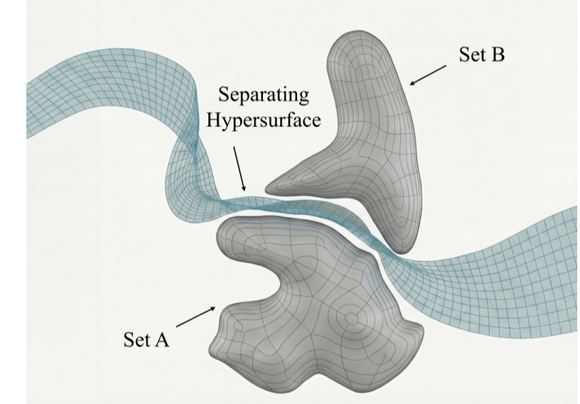
IEEE Robotics and Automation Letters (RA-L), 2026
Online trajectory optimization for arbitrary-shaped mobile robots via polynomial separating hypersurfaces.
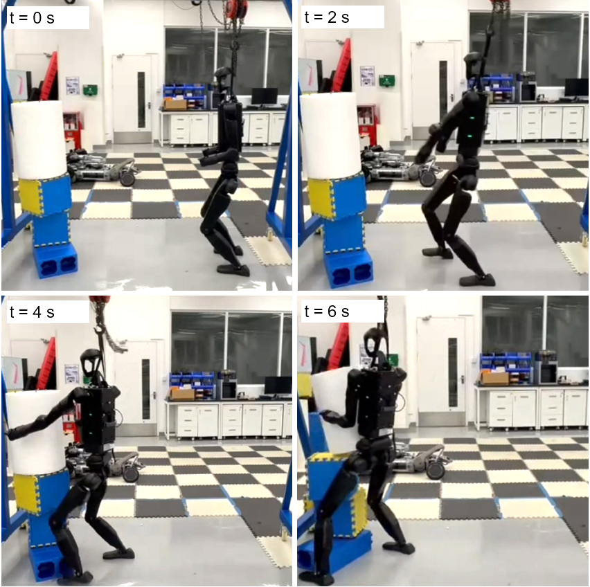
ICRA , 2026
Embracing Bulky Objects with Humanoid Robots using WBC.
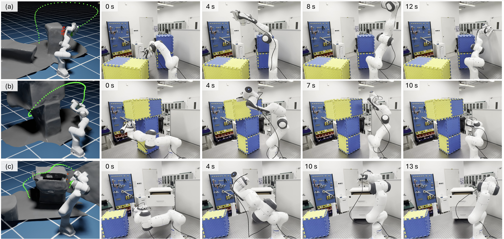
Submitted to T-Mech , 2025
Encodes the environment and the manipulator using signed distance field.
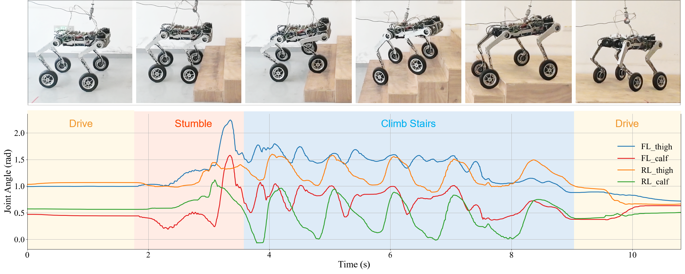
IEEE Robotics and Automation Letters (RA-L), 2025
Design and RL locomotion for Reconfigured Wheel-Legged Robot
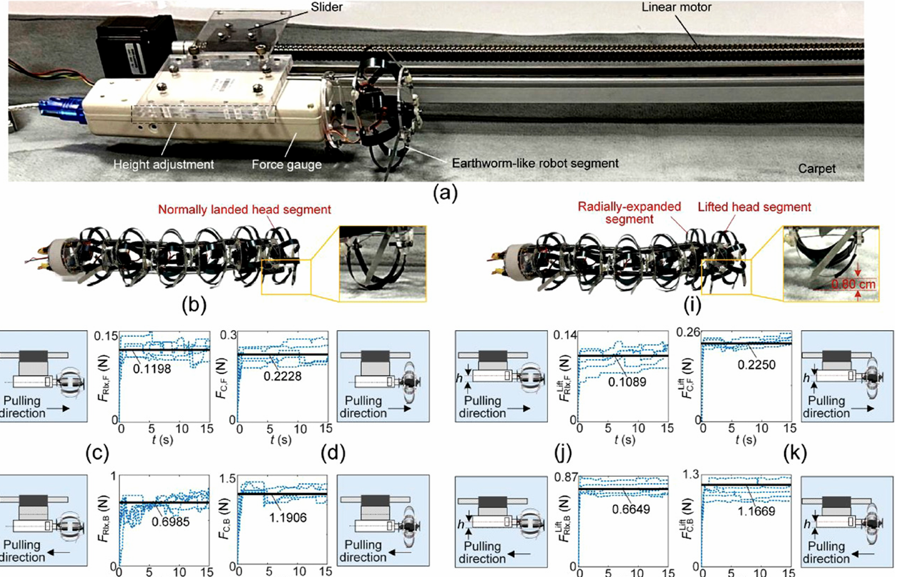
The International Journal of Robotics Research (IJRR). Top , 2025
Accurate dynamics modeling for worm-like robot
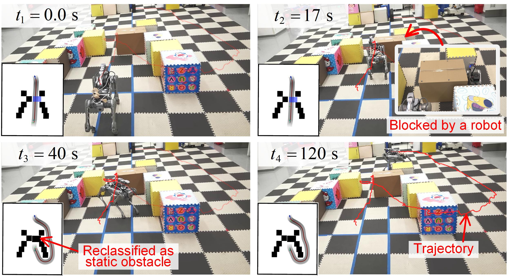
IEEE/RSJ International Conference on Intelligent Robots and Systems (IROS) , 2025
Best Paper Award on Mobile Manipulation
Best Student Paper Award Finalist
Interactive navigation framework for legged manipulators, featuring an active arm-pushing mechanism
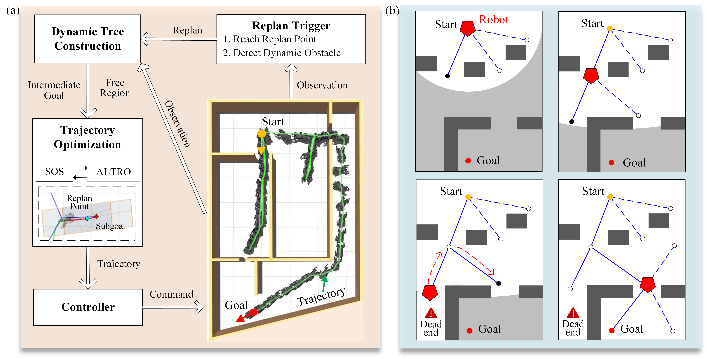
IEEE Robotics and Automation Letters (RA-L), 2025
Robot navigation in cluttered and unknown environments with tree of free regions

IEEE Robotics and Automation Letters (RA-L), 2025
Reactive Control for Mobile Manipulators with Whole-Body Safety in Complex Environments
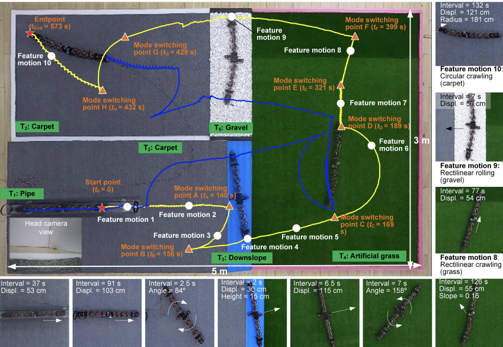
IEEE/ASME transactions on mechatronics, 2024
A multimodal metameric earthworm-like robot

International Journal of Mechanical Sciences, Q1, Top , 2023
This paper presents a new design and prototype of a Worm-Snake-Inspired Metameric robot with multi-modal locomotion capability.
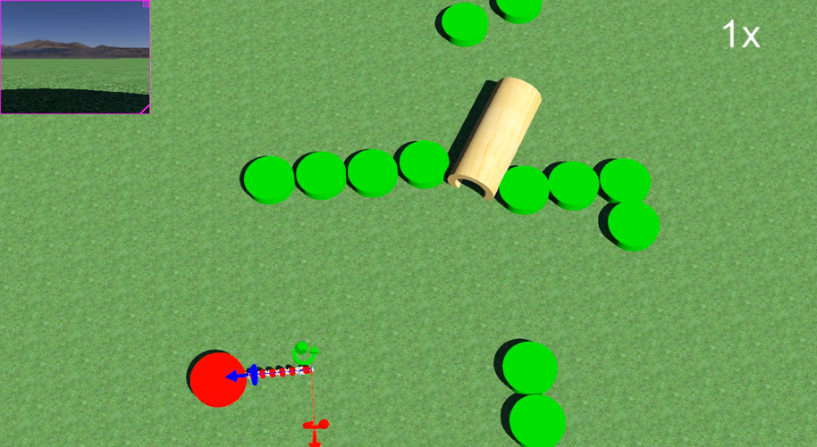
IEEE International Conference on Robotics and Biomimetics (ROBIO), 2022
Path planning for the robot with multi-modal locomotion capability.